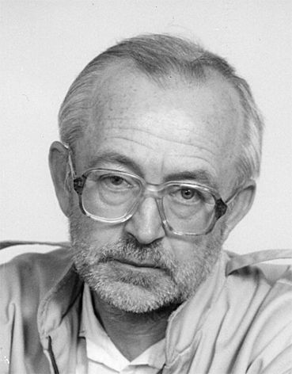
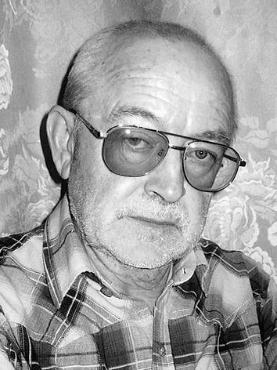

Евгений Инютин
Кисловодск
Стихи
Литературный Кисловодск, N34
ЗАТАЕННЫЙ ГУЛ
* * *
Вокруг да около, не в масть -
Удача так редка.
Соблазн увидеть и украсть -
Отсохнет пусть рука!
Её ты лучше протяни
За милостыней к Ней.
Малы дары Её, скромны?
Теплом души согрей.
9.02.2009
* * *
Сколько склеенных, чаще случайно,
Пар, отдавшихся ложной любви!
Ну а Та, что извечная тайна,
Дразнит, манит: "Меня позови!"
Но "гнездо" уже свито, а годы
Удивлённо с усмешкой грозят...
И Она, пряча слёзы, уходит,
Оставляя растерянный взгляд.
9.01.2009
* * *
Подобно бродяге, изгою,
В Любовь ухожу иногда.
Её, виртуальную, скроют
Заботы, седые года.
Прообраз - во сне и вживую -
Лукавой усмешкой зовёт.
Такую - и только такую,
В душе растопившую лёд.
19.01.2009
ПОБУЖДЕНИЕ
Зима. Скукожилась душа,
Обыденностью охватило.
Бредёшь по парку не спеша,
И чуждо все вокруг, немило.
Но вдруг - как будто кто толкнул,
Или окликнул ненароком:
Какой-то затаённый гул
Там, в отдалении высоком,
Где ветер будит дерева,
Сквозь сон бормочущие что-то...
Хоть пробивается едва,
Но жить охота - "Прочь дремота!"
23.12.2008
* * *
Милый скверик детства,
Как любил я твои,
Казавшиеся огромными, заросли!
Сколько открытий,
Подаренных тобой!
Незабываемая ловля майских жуков,
Сыпавшихся с деревьев.
Словно спелые сливы,
Шлёпались они в траву.
И не было важнее дела
У десятилетних пацанов.
Это и трагическая История с потерянным пальто,
И шалости небезобидные...
Почему ты напомнил о себе,
Старый скверик,
Во сне тревожном?
17.11.2008
* * *
Вроде бы всё хорошо.
Стоп.
Так не бывает.
Обрезая ветки,
Получил затрещину увесистую
От алычи.
Странствует кораблик-душа
По морю житейскому.
Где вы, Острова Поэзии?
12.12.2008
СОВРЕМЕННИЦА
Институт. Работа. Восток.
Дракула. Орландо Блум. Полуперсидский кот.
Поиск смысла жизни.
11.11.2008
* * *
Отары облаков,
Бегущие на юг.
Какая-то неведомая сила
Тянет меня Вслед за вами.
15.11.2008
ПОБЕДА
Родили, лелеяли. Воспитывали, учили.
Улица и СМИ выставили Свои аргументы.
Козыри родительские Оказались весомее.
17.12.2008
* * *
Не покоряются
Воле мороза-завоевателя
Реченьки-сестрёнки горные.
1.01.2009
* * *
Последний день января.
Сонно улыбается солнце.
В голых кустах сирени
Суета стайки воробьишек галдящих -
Предвестие Весны!
2009 г.
Литературный Кисловодск, N35
ДУША, ОТЗОВИСЬ!
ОЖИДАНИЕ
В тягучем сером феврале
Есть радость будущих открытий,
Когда Весны парад-алле -
В воображении закрытом
Для повседневности... Дождись!
Уже дрозды вовсю хлопочут,
А сатанеющая жизнь -
Да покорится чуду почек!
Живу предчувствием-мечтой,
Такою близкой и далёкой.
Так суетись, пичуга, пой!
Ах, это теньканье до срока!
25.02.09
ТРЕВОГА
Тяжёлое небо.
Падает снег.
Вот уже полтора часа
По радио - только музыка.
Новостей нет.
Мимо окон - ни одной машины.
Переворот?
Покушение на президента?
Выверт кризиса?
Война?
Оказалось - сбой спутниковой связи.
Только-то и всего.
2.03.09
* * *
Пленясь игривостью реки,
Пройти вдоль русла - и прохлада
Коснётся шёпотом: "Не надо
Грустить - заботы далеки!"
Закрыть глаза. И поцелуй
Её холодный принимая,
На берегу стоять у края
И слушать, слушать пенье струй.
25.03.09
* * *
Пустынно и дико. И впору стенать.
Забит миражами желанный оазис.
И будто бы где-то поблизости тать...
А было - дороги простыми казались.
Душа, отзовись! Кто тебя усыпил?
Но будит её одинокая птица.
И мир предвесенний и светел, и мил.
И верится - миг озаренья случится!
10.03.09
ВЕСЕННЕЕ
Первая зелень завораживающая!
Снова и снова ищут глаза мои тебя
Среди серости мартовской -
И не могут насытиться!
27.03.09
ЕЛЬ
Бросил взгляд случайный
На лапки-ручки, коготки-пальчики,
На стать величавую.
Вдруг поймал улыбку её волшебную.
* * *
Куча неотложных дел.
Но невыносимо тянет
Взглянуть на это дерево:
Вот-вот должно начаться
Цветение его чудесное.
Снег апрельский нежданный.
Ветка туи
Качает приветливо
Снежной головой
Панды.
16.04.09
СТУДЕНЧЕСКОЕ
Ходили-бродили...
О чём говорили?
Легко обо всём.
И, конечно же, пили.
Когда бы наутро
Вдруг праздно спросили:
"Что было вчера?" -
И не вспомнить: остыли.
А сон возвращает
Дороги былые:
Вот друг закадычный,
И милая с нами.
И что-то, как в юности,
Мы упустили.
Ходили-бродили...
Искали. Теряли...
16.04.09
* * *
Ну вот и время подошло:
Сбылось и не сбылось...
Притихло, затаилось зло,
В фаворе - друг Авось.
И зеркалу тебя не сбить,
А Творчеству, как знать,
Быть может, шанс оставит быт.
И не на что пенять.
7.05.09
В ШУТКУ
Л. ФИЛАТОВУ
Грустит печальный индивид -
Над суетою не подняться:
"Наверное, я бездарь, братцы, -
Лишь внемлю топоту копыт
Пегаса. Чаяньям конец.
О, горе мне - не "жеребец!"
26.03.09
Литературный Кисловодск, N36
КАРДИОГРАММА
* * *
И был небосвод притягательно вязок.
И не было сил оторваться - смотри:
Какой переток необычнейших красок
В прощальном восторге вечерней зари!
Томленьем охвачен - не нужно иного, -
Вдыхаю растений дурманящий дух.
И бродит, зовёт незнакомое слово,
Лаская, дразня растревоженный слух.
10.07.2009
ПРИМИРЕНИЕ
Мы такие разные с тобой:
Я - зелёный, а ты - жёлтая.
В зеленя - я, ты - на солнце,
и - хоть волком вой:
Неприступна, холодна - непреклонная.
Но спаситель наш -
тот ангел таинственный,
Что влечёт к себе так тихо и благостно.
И мы словно прикасаемся к истине,
Наполняющей и грустью, и радостью.
28.06.2009
СЛОМАННОЕ ДЕРЕВО
Больно видеть лежащую на земле
Умирающую осину,
Тело её расщеплённое -
В пору июньскую живительную.
То ли стон слышится,
То ли ветер поёт заунывно.
Стелются по траве участливой
Белесо-зелёные пряди дрожащие.
Поникли цветы и деревья.
Вот-вот заплачет Природа
Дождиком тихим.
17.06.2009
* * *
Велено выжить. Так что ж ты скулишь,
Раб недостойный? Немного осталось?
Только сейчас начинается жизнь,
Если не слушать подругу усталость.
Вот и сегодня: "Суставы, глаза..."
Главное - это, насупленный братец?
В силах в полёте душе отказать?
Ну, если так - можешь выдохнуть:
"Старец".
25.09.2009
УТРО
Словно слышу мелодию призывную
Под аккомпанемент утренней птицы.
Прошедшее, настоящее, будущее
Сливаются в одно целое.
И славишь Бога за возможность
Чувствовать, видеть, слышать, жить.
Ради этой минуты счастливой,
Когда ты ещё сонный, весь в себе,
И существуешь, наверное.
15.06.2009
* * *
Вот "сбилась ось" - и грустно, и тревожно.
Мир потемнел, но катастрофы нет.
Слепая злость,
вложи палаш свой в ножны.
Любовь, лишь ты одна
способна дать совет.
Не будем говорить, родная? И не надо.
Поверю волшебству
твоих лучистых глаз...
Улыбка просто так - разрушена преграда!
Покой и благодать да не покинут нас!
3.08.2009
ВСТРЕЧА С ОСЕНЬЮ
Близилась неслышными шагами,
Положила руку на плечо:
"Не грусти, удача будет с нами!" -
И на сердце стало горячо.
Оторопь преодолеть не в силах,
Об одном молю: "Не уходи!"
Мне не выжить без касаний милых,
Когда льют унылые дожди.
И химера грусти покидала
Тайные обители души.
Как же это всё-таки немало:
Потерять надежду не спешить.
17.09.2009
* * *
Встреча - как выстрел.
И отступать некуда.
Отдаюсь тебе, Ангел Любви,
Позабытый.
16.06.2009
* * *
Терпкий, одуряющий запах растений
В низине парка влажной.
Эх, обратиться бы в зелёного человечка!
23.06.2009
ЛИШНИЕ ДЕРЕВЬЯ
Свежие пеньки остропахнущие -
Всё, что осталось от величия вашего.
Иду, словно через кладбище.
25.06.2009
ПРОПОЛКА
"Апофеоз войны" Верещагина
Всплывает в памяти,
Когда вижу гору сорняков поверженных.
Но нет радости победы
У зелёного Тамерлана.
20.07.2009
* * *
Потрескивает лёд
Реки-жизни
Под нашими
Неосторожными шагами.
12.08.2009
* * *
Взял в руки сухой
Скрученный лист остропахнущий
Среди зелени утомлённой.
Грустью и теплом
Наполнилась душа.
29.08.2009
Литературный Кисловодск, N37-38
ЭЙ, СУДЬБА!..
* * *
Не надо расталкивать память, не надо.
Минувшему отповедь слать не спеши.
Хватало с избытком раздора и лада.
Не меркло одно лишь - желание жить!
Доверившись магии жизни однажды,
Ты злобу и зависть отправь на покой.
Лови с благодарностью миг её каждый,
И пусть не желается доли иной.
29.10.2009
* * *
Каждую осень
Растения учат людей
Расставанию
С драгоценностями.
10.10.2009
* * *
Мир сновидений.
О сколько раз Ты,
Загадочный и прозрачный,
Желанный и отталкивающий,
Пересекался с жизнью моей!
Не мыслю её без Тебя.
23.10.2009
* * *
Одиноко лежащий
На дороге
Лист кленовый.
Невольно потянулась рука
К ладошке шестипалой.
27.10.2009
БЕС
Ну вот, опять сорвался.
Хорошо ещё - наедине с собой.
Тут же и раскаялся.
А Он криво усмехнулся:
Мол - попытка не пытка.
13.11.2009
В АВТОБУСЕ
"...Посадите дедушку!"
Да это же мне!
Со стороны - обычный старпёр,
А для себя - вроде клоуна:
В маске старческой и седом парике.
Еле смех сдержал.
20.11.2009
* * *
Простой мужик,
Шутник и балагур,
Увидев меня с тяжелыми сумками,
Острил:
"Эй, сосед, когда руки укоротишь?!"
Сказать, что этот добряк
Был близким человеком,
Значит слукавить.
А душа неспокойна.
Может оттого, что ровесник ушёл?
19.11.2009
* * *
Санаторий.
Мёртвый сезон.
Единицы отдыхающих.
Медсестры, хозяйки
процедурных кабинетов,
Сидят в холле
В форме разных цветов
(Согласно темпераменту?).
Мило болтают, смеются.
Появляется отдыхающий.
Молча поднимается одна из дев
И уходит с ним в кабинет.
Поневоле возникает ассоциация
С публичным домом.
27.11.2009
ПО ОБЪЯВЛЕНИЮ
Он ждал, томясь и охая.
И вот она пришла -
Широкая и плоская,
Как рыба камбала.
29.11.2009
ПРЕОБРАЖЕНИЕ
Мрачна и зловеща -
Полная луна
Над городом.
Прекрасной и величественной
Оборачивается она
На окраине.
2.12.2009
* * *
Ничего с собою не поделать.
Нужно ли пытаться? Не вопрос!
В расстованье душеньки и тела
Свято верю: видимо, дорос.
Раньше было зыбко, мимолётно.
О бессмертьи говорилось вскользь.
А стихи, романы и полотна?
Дух впитать, увы, не довелось.
Вот - случилось. Почему, не знаю.
Да и стоит ли теперь искать?
Ведь бродя по жизненному краю,
Безотчётно веришь в благодать.
5.12.2009
* * *
Тает в сердце ледок - полегчало.
То да сё позабыть и - сначала?
Только что-то не так. Боли, годы?
Эй, Судьба, улыбнись! Нет - уходит.
Вновь условностей вал - не проехать.
Безупречен кафтан. Глядь - прореха.
Но ведь силы нашлись быть и грезить.
Так воздай и восславь: всё на месте!
8.01.2010
Литературный Кисловодск, N39
ТЕНЬ ЧЕЛОВЕКА
* * *
Казалось - все ближе подобье распада
С вопросом извечным:
"Чего тебе надо?"
Зажатое эго стенает, трепещет.
И даже родное - условностей клещи.
Но, чу! за деревьями смех на поляне?
А блик жёлто-белый
Так дразнит и манит.
Ах, вот что зовёт и дышать, и смеяться:
Лекарство весны -
Одуванчиков братство!
20.05.2010
ПРОБУЖДЕНИЕ
Как будто пелена сползает
Невзгод и непогоды. Враз
Зимой непокоренный глаз
Скользит, петляет, словно заяц,
По небосводу голубому,
По оживающей земле.
На ней сегодня петь и млеть!
Неужто было по-другому?
Мои друзья - шесть чувств унылых -
С утра ещё меня вели.
Теперь теряются вдали.
Не верится. Но - были, были...
17.02.2010
* * *
Прослыву жлобом и нелюдимом,
От себя зато не отступлюсь.
Покажусь и робким, и ранимым,
Лишь бы не клеймо тупое - "Трус!"
А толпа резвится и хохочет:
Ей жратвы и пойла подавай.
Перебьются. Мой день - между прочим.
Да родным и близким - каравай!
10.02.2010
ПРЕДСКАЗАТЕЛЯМ
Гаданья, гуру, гороскопы,
Приметы - усмешки Судьбы.
Сё в мир прорывается, чтобы
Воскликнулось: "Как же слабы!.."
Землею чудес не измерить.
Доверье - сюрпризам небес.
Удачи, сомненья, потери...
Вдруг - вспышка! И - будто воскрес!
И, видя потуги людские,
Что силятся Тайну открыть,
Все чудится - "Кто вы такие?
Умерьте ненужную прыть!"
6.01.2010
* * *
За весь день
Довелось испытать
Единственную радость -
Тропинкой фиалковой пройти.
1.04.2010
ИЗ ЖИЗНИ КНИГ
"Приваловские миллионы"
Мамина-Сибиряка -
"Трём товарищам" Ремарка:
- Лучше быстрая смерть
На костре,
Чем медленная -
В туалете.
8.04.2010
* * *
Тревожно. Муторно.
Хлопоты житейские...
Растворилось, улетучилось всё.
А всего-то метров двести
По парку заснеженному
Берендеевскому
Прошёл.
26.01.2010
* * *
Споткнулся о тень
Шедшего навстречу
Человека неприметного.
4.03.2010
* * *
Растерянно ползающий
По полу кухни
Муравьишка одинокий.
Словно слышу плач
Ребёнка потерянного.
12.01.2010
* * *
Ветви деревьев зимних
Кажутся слепками
Судеб людских.
21.01.2010
* * *
Пасмурно. Серо.
Старый каштан,
Опухолью обремененный,
Дышит тяжело.
9.03.2010
* * *
Огромный белый шар
Вишни бушующей
На обочине дороги.
Почему-то не замедляют шаги пешеходы,
Не притормаживают машины
Пред чудом весенним.
22.04.2010
* * *
Словно Шива, танцует
Куст форзиции цветущей
Под музыку ветра.
22.04.2010
Литературный Кисловодск, N40
МУЗЫКА ЛЕСА
* * *
Прошло, пробежало, пропело...
Пора оглянуться назад.
Пусть нет до минувшего дела,
Но как бы хотелось узнать
О тех дорогих и далёких,
Что след оставляли в судьбе.
Растянуты, сдвинуты сроки -
Тех чувств не находишь в себе.
И если б явился нежданно
Уже позабытый - тогда...
А впрочем, теперь это странно:
Во снах лишь - друзья, города...
2010 г.
ЖАРА
Рыжая бестия, как ты достала!
Жертв уже столько! Всё тебе мало!
Неумолимо мучительно жжёшь.
На наказанье вояж твой похож.
Ночью-заступницей не остудиться!
Сон-наважденье - всё та же криница.
Стонем, спасения не находя,
Словно в безумстве: "Прохлады, дождя!"
04.08.2010
* * *
Когда невезуха в дозоре,
Быть может, не стоит роптать,
С сомнением жить априори,
Теряя опять и опять?..
Пройдёт, пробежит, пронесётся
Чреда несогласий и бед.
Глядишь - уже зебра пасётся,
И миг повседневный - воспет!
30.07.2010
* * *
...И ощутил себя
Уличным котёнком,
Попытавшимся из любопытства
Проникнуть
В элитный дом
И брезгливо отброшенным
Хозяйской ногой.
17.09.2010
* * *
Вид из окна:
В ожидании машины-вышки,
Чудится, листья деревьев
Знаки подают:
"Сегодня вряд ли приедет".
29.06.2010
* * *
Дождик весёлый
Не пускает в огород:
Показывают нос сорняки.
Тучи нависли,
Словно неизбежность.
Всё притихло.
И только детворе
Весело и беззаботно.
Лето. Курортный парк.
Кормёжки и фотографирования
Вызвали, похоже, звёздную болезнь
У белок.
22.05.2010
* * *
Вхожу в царство лесное
С желанием обратиться на "Вы"
К каждому из поданных Его.
23.06.2010
* * *
Бреду, словно пьяный,
Среди терпких запахов растений,
Летних, последождевых,
Зовущих...
На какое-то время
Код пластиковой карты
Запамятовал.
03.06.2010
* * *
Музыка леса!
Ты звучишь во мне,
Поглощая звуки города,
Благодаря зелёным невольникам его.
17.06.2010
* * *
Город. Машины. Здания. Лица...
Знойно и тяжко... Остановиться!
Что-то заботит, тянет, зовет,
Словно прохлада утренних вод.
Чу, приоткрылась! Или показалось?
Тайна-загадка - самая малость:
Дверца, в которую вход воспрещён.
К ней прикасался только лишь сон...
25.08.2010
Литературный Кисловодск, N41-42
НЕЗНАКОМКА
* * *
Вокруг теплынь, а на душе мороз.
Ну где ты бродишь, Непогодь родная?
И день очередной сюрпризов не принес:
Вновь молодится Осень, завлекая.
* * *
Но это всё, прости, не про меня.
Какие могут быть веселия и шашни?
Уже недостает того, сего, огня.
Резвиться и порхать, похоже,
день вчерашний.
СУДЬБА И ЖИЗНЬ
В недавнем - ярый фаталист,
Уверен, опытен, речист.
Но Жизнь сказала: "Погоди,
Не всё так просто на Пути.
Ведь ты упорно день за днём
Живёшь и молишься о том,
Что б дал тебе Он не пропасть,
Смягчил беду, отвел напасть...
Но вот исправит ли Канву -
Узнаешь только наяву".
* * *
Клочья утреннего тумана
Поглощает, словно сладкую вату,
Мальчишка-рассвет.
18.10.2010
* * *
Исступлённо метёт старуха
Асфальт перед домом.
Бормочет что-то в тучах пыли.
Будто ворожбу творит.
9 ДНЕЙ
Перышко
На поминальном столе -
Вестью Оттуда.
20.11.2010
СТРАХ
Всю жизнь
Боялся людей,
Даже родных и близких.
В глазах застыло
Недоверие.
СЛОВА
Казались вспышкою слова,
Которых не произносил доныне.
Но пламя их так скоро стынет.
И тлеет огонёк едва.
И все же оставляют след.
Их появление - предтеча
Тех, что сильней цепляют, лечат.
И выбора иного - нет.
09.12.2010
НЕЗНАКОМКА
Ты рождена для поцелуев,
И губы чудные твои
Зовут невольно и волнуют.
Даря иллюзию любви.
Как мушка-родинка маняща!
Так просто взгляд не отведёшь.
Скрываешься в житейской чаще...
Но где же тот, кто с фавном схож?
* * *
Каждой долькой души.
Каждой клеточкой тела
Мне с тобою прожить...
Так природа велела.
Если вдруг вразнобой -
Эго ноет и стонет.
Стать поможет собой
Лишь касанье ладони.
Взгляд мгновения длит,
Синеокий и милый, -
И скукожится быт,
И прибавятся силы.
Литературный Кисловодск, N43
ПРЕДВИДЕНИЕ
* * *
Таянье. Ветер. Промозглая даль.
То ли являлось, то ли приснилось.
Образ уплыл, растворился, а жаль -
Вечностью, мнилось, проявлена милость.
Не зацепиться, а в сердце - восторг!
И не искать ни причин, ни последствий,
И возвращается временем долг:
Калейдоскопом - мгновения детства.
08.02.2011
* * *
Истерика Зимы - обильный снегопад.
Но почему-то трудно расставаться с нею.
Да, Сменщице я, безусловно, рад,
И всё-таки о пройденном жалею.
Куда-то не успел, чего-то не сказал,
И понемногу покидают силы.
Всё чаще снится лиц уютный зал
И голос - и таинственный, и милый.
02.03.2011
* * *
- Похож?.. - Ну, конечно! Улыбка.
Бушует изменчивый мир.
Поток мимолётностей зыбкий,
Какие ты сходства дарил!
Маститый писатель - мышонок!
Там - ветка Данаей легла.
Вот Образ - пленительно тонок,
Небесная манит игра.
И хочется помнить лишь это
Природною памятью той,
Что держит порой до рассвета
Над ставшей чужой суетой.
22.02.2011
ВСТРЕЧА
Тряхни, старик, седыми волосами
И улыбнись уставшею душой.
Весна сегодня бродит между нами,
Забудь про всё на миг, её воспой,
Затейницу, красавицу, плутовку!
Ах, как сегодня твой приход хорош!
И, право же, становится неловко
Смотреть на тех, кто на тебя похож.
16.03.2011
* * *
Влечёт апрельский снегопад
Своей унылой партитурой,
Такой загадочной и хмурой,
Природе ветреной под стать.
В душе смятенье, разнобой.
Растеньям зябко и постыло.
Сквозит неведомая сила -
Зовёт и манит за собой.
И нам с тобой не по себе:
Стучатся колкость и унылость,
А ничего ведь не случилось:
Молчим, доверившись судьбе.
* * *
Муторно, зябко, тревожно.
Где ты, подруга-Весна?
Может добраться не можешь -
Бродишь в тумане одна?
Или опять загуляла
С Ветром? Обычный сюжет.
Шёпот куста краснотала:
- Горе, хозяюшки нет.
11.04.2011
* * *
Попрятались слова, и лишь восторг остался:
Иначе не принять цветение Твоё.
И словно бы повсюду звуков алость,
И голова кружит - прекрасно бытиё!
И верить не хочу -
"Природа равнодушна..."
Растений голоса -
"Ты здесь не одинок".
Вот почему с Тобой
мне никогда не скучно.
Давай поговорим, трепещущий листок.
01.05.2011
СТАРАТЕЛЬ
Всё реже попадаются
Строчки поэзии,
Душу трогающие.
02.02.2011
* * *
Снова перепутье:
Путы официоза,
Тщеславие тешащие,
Или терпкое вино свободы?
Казалось бы, выбор сделан.
Но отчего такая неприкаянность?
17.02.2011
* * *
Не перестают удивлять
Способности домашних кошек
Вызывать хорошее настроение
Даже у плохих людей.
14.03.2011
* * *
Больно смотреть
На жестоко обрезанные деревья:
Будто аллеей мучеников прошёл.
24.03.2011
* * *
Словно дети,
Резвятся на поляне
Первые цветы весенние.
24.04.2011
Литературный Кисловодск, N44-45
ЗАОБЛАЧНЫЕ ЗАВОДИ
* * *
Не отпускает: бесконечно - "надо!.."
И годы не помеха для неё.
И пусть за одоление - награда,
Но тускло и уныло Бытиё.
А может, хватит, отдохнем? Забота.
Давай договоримся как-нибудь.
Лукаво улыбается: "Свобода?"
И продолжаем беспокойный путь.
30.05.2011
ДИАЛОГ
Крадется голос повседневности,
Что часто тих и неказист.
Но требует любви и верности:
- Остановись и оглянись.
Оставь заоблачные заводи.
Живи без крыльев, не спеша.
- Унялся б, искуситель, право, ты, -
Вопит летучая душа.
30.06.2011
* * *
На закрытие книжного магазина "Букинист"
Погасли "Аврора" и "Светоч".
Настал твой черед, "Букинист".
"Борзеют!.." "Трагедия!.." "Мелочь!.." -
По-своему каждый речист.
Победны компьютера "клики".
Пещерному равный расклад.
Что будет с родным и великим,
Когда встрече с книгой - не рад?
* * *
Вспоминаешь, подводишь итоги.
Что же, милая, мне подводить?
Видно, жертвовал очень немногим -
Чуть мерцает прошедшего нить.
А душа ни о чём не жалеет.
Для неё - только жизни накал.
Встречу ль строчки на этой аллее?
Тем и жив, а иначе б - пропал.
УЛЫБКА ОСЕНИ
Увяданье в воздухе витает.
Отчего-то дышится легко.
Ветер листья собирает в стаи.
В небесах висит осенний код.
Да, сегодня, именно сегодня
Я его, похоже, угадал.
В отблесках обманчивого полдня
Робко проступает идеал.
НЕПОСЕДА
Ну, не может она
Жить просто так.
Все норовит обернуться
Птичкой-рыбкой:
Полетать над пирамидами,
В Мертвом море поплавать...
Откуда в ней
Этот ген ближневосточный?
* * *
Стояла череда удушливых ночей.
Подобных что-то не припомню.
В какой-то миг меж забытьём и сном
Вдруг вижу маму (её нет давно)
Со мною в комнате.
И сразу - шум.
Похожий был при наводненье
С десяток лет тому назад,
Когда река взбесилась,
Чуть дамбу не прорвав.
И с ужасом осознаю, что
Вот он, Апокалипсис! -
По заревам зловещим.
"Закрой скорее окна, мама!" -
Кричу, не в силах двигаться.
Впервые в жизни мне
Смерть показала облик свой.
И в сердце словно камешек застрял.
31.07.2011
* * *
Озорно вспархивающий и убегающий
Чёрный дрозд
Зовёт поиграть
В дебрях зелёных.
20.05.2011
* * *
Ах, как нежен
Твой поцелуй-укус,
Крапива молодая!
01.06.2011
* * *
Чему-то криво улыбается
Стоящий на обочине дороги
Автомобиль.
01.06.2011
* * *
Мелькнула мысль
О чём-то неизведанном, желанном -
И будто озарилось всё
Светом умиротворённости.
15.06.2011
* * *
Словно стая псов, -
Несёшься, едва вписываясь в русло.
Неужто это ты, речушка горная?
21.06.2011
Литературный Кисловодск, N46
БЛАГОДАРНОСТЬ
* * *
Что там, за прелестью осеннею,
Пыланьем голубых небес?
Оставить "бедную" Вселенную?
А знать бы - отчего воскрес?
И рана мнится неглубокою,
И радость теплится в груди.
Жить и любить, поменьше охая,
И дальше продолжать идти!
15.09.2011
* * *
Вхожу в чудо-осень и, словно впервые,
Вдыхаю её аромат.
И чувства, и мысли щемяще-благие,
И каждому листику рад.
Похоже, сегодня и Ты благосклонно
Сияешь и светишь добром.
О Небо, прошу,
не усердствуй, довольно!
Но можно ль сейчас о другом?!
12.10.2011
* * *
Толпа раздражала всегда.
И я её, видимо, тоже.
Приходят седые года
Былое вбирать и итожить.
Но также смириться невмочь
Со ржаньем её и напором.
Да что воду в ступе толочь -
Не спутать бы только с народом.
14.11.2011
Елене
Нежданность - таянье снегов.
И словно душу отпустила
Та ледяная злая сила,
Которой сдаться был готов.
Так зябко было в ноябре,
Так непривычно и уныло.
Метель торосы городила -
Зимы сверкающий портрет.
Но ты, озябшая, жила
Светясь и грезя, напевая,
Как будто ожидая мая,
А были лишь дела, дела...
2.12.2011
СНЕГ НА ДЕРЕВЬЯХ
Словно птицы белые летят!
Жаль, что это только показалось.
На душе смиренье и усталость,
В зимнем мороке исчезла благодать.
Старый сад так беспросветно бел,
Тихо спит, угрюмый и ранимый.
Пусть вокруг восторг: "Какие зимы!"
Но - увы, и я б уснуть хотел...
10.01.2012
ПОПСА
Убита строчка наповал,
А с нею - песня.
Припев вовсю её гонял,
Так неуместна
Была настойчивость его.
Такая лажа!
А на экране - торжество.
Вопили даже.
20.01.2012
ЕДИНЕНИЕ
Вот уже третий встречный
Улыбается чему-то, напевая.
Так бы и брести бесконечно, бесцельно
По парку осеннему щедрому.
13.10.2011
* * *
Когда любит женщина,
Как тепло с ней Даже во сне!
* * *
Недовольно фыркнула Ветка форзиции
В ответ
На неосторожное прикосновение.
Пришлось извиниться.
4.11.2011
К ЕЛЯМ
Так и тянет Побыть с вами
Без лишних слов
На работу -
Словно на каторгу.
Рык рождается.
* * *
Не верить В бессмертие души?
Жаль материалистов.
* * *
Предзакатные причудливые облака.
Смотрю -
И радость нежданная.
* * *
Продержаться бы
На сегодняшнем житейском уровне
До конца дней!
* * *
Старея,
Чаще благодарю Его,
Чем прошу.
16.12.2011
ПРИСНИЛОСЬ:
Полный зал людей.
На сцене молодой человек
С пышной шевелюрой
Читает мои стихи
Из первых, но удачных,
Однако сбивчиво и робко.
И выкрики из зала:
- Кто он такой?!
- Какой-то бред несет!
Проснувшись, осознал,
Что то был я.
18.11.2011
Литературный Кисловодск, N47
ГОЛОС ИЗДАЛЕКА
* * *
Покоя раб просил у Бога:
Усталость одолела. он
Иного ожидал итога.
Но будет ли услышан стон?
Ведь и повязан, и обязан...
Покой беднягу не спасёт.
Иллюзия - тот мягкий саван,
Что скроет от земных забот.
11.04.2012
* * *
Не думал, не гадал,
Что сложится вот так:
Нескучный сериал -
Восторг, сомненье, страх...
Рассказывай, смеши,
А где-то и поплачь:
То явь - то миражи,
То лекарь - то палач.
* * *
А что такое - настроенье?
Вот ты - ничтожен, слеп и глух.
Поманит пальчиком забвенье -
И словно испарится дух.
И в одночасье - перемена:
Надежда голос подает -
Ослабевают путы тлена,
И безнадёги тает лёд.
Вдруг из ведомого - ведущий!
По силам всё преодолеть!
Насколько мир светлей и лучше!
Неощутима тяжесть лет!
БЫЛ?..
"... иди, иди! найдем другого!" -
Скандал и шум - из ничего.
В азарте выпорхнуло слово:
Был человек - и нет его,
И будто не было в помине...
Конечно, явится - другой.
Но отчего-то память стынет:
А ведь он был такой живой!
21.02.2012
* * *
Случился трудный период.
Обращение к нему -
И происходившее затем
Доводило до дрожи.
Душой владело
Чувство благодарности и раскаяния.
В горле - ком, и слёз не сдержать.
28.02.2012
* * *
Серо. голо. Морозно.
Тушка птичья на аллее -
Накатила тоска безотчётная.
31.01.2012
* * *
Непривычные холода.
Кажется - всё замерзло.
И только Бабочка-Поэзия
Порхает
Неустанно.
10.02.2012
ОТТЕПЕЛЬ
Будит упорно
Озябшую душу
Суета воробышков
Предвесенняя!
14.02.2012
* * *
Как чист
Утренний голос птицы
На границе зимы и весны!
18.03.2012
* * *
Куча проблем,
А тянет летать
Из-за трёх строчек
Новорожденных
30.03.2012
* * *
Стайка девчонок
Курит-греется
У вечного огня,
Болтая беспечно.
02.04.2012
* * *
Аромат черемухи цветущей
Повелевает взглядами
Ждущих на остановке.
27.04.2012
* * *
На фоне Смерти
И первых фиалок
Всё показалось
На миг
Мелким и ничтожным.
12.04.2012
НЕ НАДЫШАТЬСЯ ВЕСНОЙ!
Словно слышится
Голос её далёкий:
То ли "До свидания!",
То ли "Прощай!"
15.05.2012
ЛИТЕРАТУРНЫЙ КИСЛОВОДСК, N48-49
ПУТЕМ СТИХА
ЧИТАЯ СТИХИ
Я в них опору нахожу,
Когда вокруг так беспросветно.
И пусть в одних - невнятный шум,
В других же - искорки привета.
Так неприемлемы подчас...
Желанны и созвучны - тоже.
Порой так не хватает вас,
Тех, что прочтёшь - мороз по коже!
29.07.2012
* * *
Вот он, хороший человек,
С лицом открытым, добрыми глазами.
Его беда - писать для всех,
Греша избитыми словами.
А вот - зануда, но поэт.
Читатель им не избалован.
Согласья между ними нет,
Но спорят, спорят... Скучно, словом.
24.06.2012
* * *
В листву, смятенная душа!
Хлестаньем веток задыхаясь,
Беги, спасения ища, -
Осталось ведь такая малость.
Но что такое? вновь затык.
Не сметь теперь остановиться!
Опять - "Не время. Так привык..."
Прорвись же, пойманная птица!
21.07.2012
ИСЦЕЛЕНИЕ
Взрываясь и всё заглушая,
Царит обезьяний восторг.
Фанатов безумная стая
Бурлит и - мерещится морг.
Лечиться стихом от футбола!
Се было вчера невдомёк,
И страсти "всесильнейший" молох
Туманил живительность строк.
И вдруг оказалось, что это
Лишь вирус, болячка толпы.
А веское слово Поэта -
Лекарство, которому - быть!
12.06.2012
* * *
Шумны, докучливы слова,
Пеняют времени и чувствам,
Что не сгубили их едва
Своею склонностью к безумствам:
"А ну не медля за перо!"
И вот - знакомая картина:
Бездарно, суетно, старо...
Словес-обманок паутина.
22.08.2012
* * *
Искать свой путь средь бурелома.
Плутая, выйти на шоссе,
Что так открыто и знакомо.
Не ждать попутку - поглазеть.
Не обманувшись, с чащей слиться,
Увидев промельк вдалеке:
А вдруг окажется синицей,
Нежданно пойманной, в руке.
31.08.2012
* * *
Когда похотливо-расчетливый
Дым соблазна
Разъедает молодые и старые души -
Мечется естество...
И вот - склеилось, сложилось,
Получилось!..
Как горько и смешно
Смотреть на эти пары.
* * *
"Ви-ди-те?" - вопрошает из сада
Птичка-невидимка залётная.
28.06.2012
* * *
На все невезухи-нескладухи -
"А если бы сегодня
Не удалось увернуться
От наезжавшего автомобиля?.."
15.07.2012
* * *
Редко встретишь
Достойно глядящего
Старого человека
В русской провинции.
Отсюда - неприязнь молодых.
09.08.2012
* * *
Всепобеждающе высится
Растение-сорняк
На куче щебня строительного.
14.08.2012
ЛИТЕРАТУРНЫЙ КИСЛОВОДСК, N50
ДУША ПРОБУДИТСЯ!
* * *
Чудо-Осень! А душу тревожит
Неуют и раздрай в голове.
Обернулось надёжное ложным -
И дорога распалась на две.
По которой - не ведаю. Может
Ты, Колдунья, подскажешь? Прости
За назойливость. Верю, поможешь
Долгожданный покой обрести.
* * *
Освободиться от всего,
Что чуждо и гнетёт годами.
Дышать свободно и легко,
Но это только между нами,
Мой несговорчивый двойник.
Конечно, всё ты понимаешь.
Твой оппонент обрюзг, отвык...
Фантасмагория одна лишь.
ПРИРОДА
Безумно-поспешно, бездушно
Тебя напрягают, когда
Твердя бесконечное "Нужно!..",
Ваяют гробы-города.
А следом - боязнь и стенанья:
"Все кончится скоро! За что!?"
И чудятся призраки майя,
И мнится библейский итог.
МИР ИНОЙ
Ловить сновидений обрывки,
Насущное всё - на потом,
Пока не разбавился зыбкий
Тот мир, что, казалось, знаком,
Причудлив, волнительно-дорог,
Уродлив, томительно-зол...
Рассеется утренний морок,
Оставив сомнения, боль...
И время душе пробудиться.
Что с нею, не ведаю, но
Летает тревожною птицей
И бьётся, и ищет окно.
22.12.2012
* * *
Слюнка ночная.
Острое чувство -
Жизнь утекает.
* * *
Мелочи жизни...
Но как больно
Цепляют порой!
ПРЕДЧУВСТВИЕ
Иногда кажется,
Что спрыгнул с подножки
Последнего вагона поезда,
Несущегося в тартарары.
* * *
Настойчивые атаки непогоды
Отбивает город-воин.
И все же грустно отчего-то...
* * *
Жемчужинки утренней росы
Словно зовут к жизни
Пожелтевшие листья ирисов.
* * *
Ощетинилось окружающее.
И только Природа
Улыбается грустно...
* * *
Свобода! Но - нет, не поётся.
Печален и скуден итог:
Копейкой не полнится донце,
А ведь упирался, как мог.
Но силы уже на исходе.
Потугам поверх - "Откажись!"
То старость, ворча, верховодит.
Но чем-то подсвечена ЖИЗНЬ!
Пожалуй, Судьба угодила:
Есть право гордиться, когда
В Душе появляется Сила,
Что мерит иначе года.
ЛИТЕРАТУРНЫЙ КИСЛОВОДСК, N51
ДОРОГИЕ МИРАЖИ
ОЖИДАНИЕ ВЕСНЫ
Я так тоскую по тебе,
Переносящей муки плена,
Что мнишься необыкновенной
И значимой в моей судьбе.
И в ожидании брожу,
И, кажется, твой голос слышу -
Доносит ветер, будто свыше, -
И доверяюсь миражу...
9.02.2013
С. П.
Всё зримей и ближе
Извечный причал,
А память тех ищет,
Кого повстречал.
Судьба улыбалась,
Когда он возник!
Желанная малость -
Одобренный стих.
Добряк, безусловно.
Слышны же сперва,
Открытостью полны,
Простые слова.
24.02.2013
* * *
Осколки прошлого во мне
Живут, подсвечивая явь.
Вот появляются во сне
И как бы говорят: "Оставь.
Забвеньем нас не превозмочь".
Так притягательны они!
Когда повелевает ночь -
Душе нужны огни.
17.02.2013
ЗОЛОТОЙ ТЕЛЕЦ
Дым коромыслом:
Пляска идёт.
- Что же вы скисли?
Все в хоровод!
Выше коленца!..
Гул без конца.
Некуда деться -
Блики тельца.
12.04.2013
* * *
Тонкокожесть. Отмеченный ею
По глазам узнаваем, когда,
Их поднять зачастую не смея,
Из себя еле выдавит: "да".
Замаячит улыбка Фортуны,
Нет препятствий - и руки вразлёт!
Будто снова - и дерзкий, и юный...
Глядь, опять он понурый бредёт.
6.06.2013
* * *
Берег желанный!
Покой. Сон. Тишина.
Неужели, это наяву?!
31.01.2013
* * *
"Да ты ещё о-го-го!" -
Нашёптывает дух-искуситель.
"Э-хе-хе..." -
Устало откликается плоть.
4.03.2013
ЦВЕТЕНИЕ
Словно долгожданная стая
Бело-розовых птиц
Опустилась на город -
Серый, апрельский.
2.04.2013
* * *
Часовой Природы,
Стойкий одуванчик -
Бессмертия символ.
11.04.2013
* * *
Как хрупок и раним
Бывает человек
В старости!
* * *
Под дождиком майским
Ощетинились болячки застарелые.
Не дать им ходу,
Молодость вспоминая!
* * *
Разбередил душу
Ветер весенний
Тревожный...
Вот уже больше месяца
Обитающая поблизости кукушка
Дразнит предсказанием
Долгожительства.
Литературный Кисловодск, N52
СОЛНЕЧНЫЕ БЛИКИ
БОЛЕЛЬЩИК
Неладно в доме. Горяча
От солнца рама.
Башка - подобие мяча:
"Зенит" - "Динамо".
Грядёт субботняя дуэль,
Два дня в запасе.
Но вряд ли выветрится хмель
У дяди Васи.
Он будет бешено орать:
"Вперед, Широков!"
...В деревне старенькая мать.
Всем одиноко.
22.08.2013
* * *
Господствует сонная ниша.
Тебе, повседневность, - отбой.
Ночные видения - ближе,
Волнуя, идут чередой.
Влекут ностальгией и жизнью,
Непрожитой мною, земной,
Всё чаще дыша укоризной.
Лишь утро дарует покой.
* * *
На стихи Ф.Баранцева в "Кисловодской газете".
"Такого еще не бывало..!" -
Газетные штампы взахлёб.
Редактор с открытым забралом
Идет на читателя - в лоб.
"Читайте волшебные строки!.." -
Восторженный длится призыв.
Читали, не будучи строги,
"Шедевры" не так оценив,
Как видно, "герою" хотелось,
И тем, кто его возносил.
Наверное, автору пелось...
Читать - просто не было сил.
15.08.2013
"ТОЛСТЫЙ ЖУРНАЛ"
Суета, маета, немота...
Никуда от хандры не деться.
Как бывает развязка проста:
Под рукой оказалось средство.
Я открыл его - и куда
Подевались и боли, и хвори?
Вот и снова душа молода!
Мир желанный, ты явишься вскоре.
08.09.2013
* * *
Желанье быть - а для чего?
Попробуй-ка найти ответ.
Не хватит времени всего -
И доводы сойдут на нет.
А может, стоит просто жить
До той, непознанной черты -
Тогда и творчество, и быт
С любовью новой примешь ты?
И уповать на благодать,
И гнать неверье, как чуму.
И, будь что будет, - не узнать:
Решать приходится Ему.
20.09.2013
* * *
Торгуясь собственной свободой
Не с кем-нибудь - с самим собой,
Казалось, что гляжу, как в воду,
И в силах обрести покой,
Удачно выбрав синекуру:
Её, я верил, пруд пруди.
Но зря "пророчествовал" сдуру:
Повсюду ложные пути.
Торговли лавочка закрылась.
На что теперь мне уповать?
На божью и людскую милость,
На книги и диван-кровать.
22.09.2013
* * *
Шепнул что-то на ухо
Укроп цветущий.
* * *
Разбудил говорок вороний:
"Холода скор-ро".
* * *
Маска скорби
Появлялась на его лице
В нужную минуту.
* * *
Танцовщица
Перемещается по столу
Вокруг транзистора
Под музыку зажигательную
Муха осенняя.
30.09.2013
Литературный Кисловодск, N54
СЧАСТЛИВЫЙ человек
ОДИНОЧЕСТВО
На робкий стук, и тихий, и тревожный,
Душа не отзывается пока.
"Полюбопытствую, но только осторожно". -
Покой уже покинул старика.
А между тем входной проем всё шире,
Вот Естество распахивает дверь -
И Одиночество уже во всей квартире
С Душою заодно и властвует теперь.
29.10.2013
ПРОБУЖДЕНИЕ
Счастливый человек,
Сидишь и ждёшь чего-то.
Неважно, что оно,
Быть может, не придёт.
Улыбчив и смирен, похож на идиота.
Жилище - не жильё, а величавый грот.
Пусть завтра ураган поднадоевших будней
Закрутит, унесёт неведомо куда.
Сегодня - это сон,
Желанный, безрассудный,
Которому, увы, не сбыться никогда.
10.12.2013
* * *
Мельканье мест, событий, лиц,
Знакомых городов и улиц.
Летал бывало, падал ниц.
Былые чувства встрепенулись.
Они всё ближе и родней,
Когда года зовут к закату,
Вторгаясь в череду ночей,
Не ставя в сновиденьях дату.
01.12.2013
* * *
Идешь по краю тьмы, отчаянье смиряя,
Итоги подводя, в молитву всё вложив.
Гримаса у Судьбы то добрая, то злая -
Мелькнёт порой среди правдивости и лжи.
Лишь Веры не теряй - не многое даётся.
Пускай ты будешь нищ, согбенен и убог,
Не забывай Его - и, может быть, зачтётся
То что в душе хранил - и поделиться смог.
20.11.2013
СОН
Дождь летний, благодатный, очищающий.
Усадьба наша, плющом цветущим увитая.
Ручейки чистейшие, повсюду бегущие.
Катаемся с женой и детьми
На велосипедах по дорожкам двора -
Счастливые.
* * *
Строить жилище
Внутри себя -
Занятие бессрочное
И необходимое.
10.11.2013
* * *
Ну вот и голубок
Клюнул на отраву:
Долбит кулёк с чипсами.
25.11.2013
* * *
Ощутил гнев
Старой груши
При обрезке ее:
"Ну-ну, милый,
Поднимайся повыше... "
Пришлось остановиться.
27.11.2013
* * *
Снилось:
Любуюсь природой
В Кисловодском парке
На берегу речки Ольховки,
Знакомлюсь с черным дроздом,
Предлагающим разделить с ним
Пищу незамысловатую
Из крошек и насекомых...
Литературный Кисловодск, N56
МОРОЗНО
* * *
Ловя отголоски созвучий,
Вняв пению ветра и птиц,
Ты вдруг ощущаешь - везучий! -
Как в душу они ворвались!
Житейские путы ослабли,
Бредёшь обо всем позабыв,
Под нос бормоча: "Крибле, крабле..." -
И будто бы слышишь призыв:
"Запомни вот это - живое,
Что стало сейчас дорогим".
Тот миг, что дарован изгою!
А все остальное - не с ним.
13.03.2014
НОВОГОДНИЙ ПРИЮТ
Колпак, улыбка - "Заходи!"
Душа, калитка - нараспашку!
Ну что же, Александр, веди,
Показывай мне чудо-сказку.
Вот синей лошадью в упор
Встречает необычность сада,
Где мандариновый убор
Деревьев и кустов - услада!
Уют забытый шалаша,
Где тянет посидеть с дороги.
Живая ёлка хороша!
Заботы меркнут и тревоги.
Он одинок, слегка нетрезв,
И голос зазывной не звонок,
Но нерастраченный резерв
Любви почувствует ребёнок.
5.01.2014
* * *
Что может сегодня присниться,
Какой необычный сюжет,
Какие пространства и лица,
Которых, возможно, и нет?
Теперь засыпаешь в надежде
Тот призрачный мир обрести.
"Душа, так ведь не было прежде".
В ответ улыбнулась: "Прости..."
26.03.2014
ЧЕЛОВЕКОЛЮБИЕ
Зима. Морозно.
Трое подростков ершистых
Пьяного мужика увидели,
Лежащего у дороги.
Равнодушны взрослые,
Идущие мимо.
Впрочем, не все:
Один пнул ногой бедолагу.
Подошли к пьяному:
Лицо в крови, бормочет что-то.
Оттащили к машине, стоящей поблизости,
Посадили, к ней прислонив.
Скорую вызвали по мобильнику.
Полчаса ждали.
Приехала, забрала болезного.
Разошлись по домам, озябшие,
Повзрослевшие.
30.01.2014
"ЛИНИЯ ЖИЗНИ"
О.Н.
Словно Пифия роняла она слова
В маленький зал
О жизни своей многотрудной,
О знаках судьбы,
О приобщении к православию...
В сочетании с тонкой фигурой
Рыжая голова её
И лицо с ярким макияжем
Напоминали язычок пламени,
Особенно когда читала стихи.
Внимало ей трепетно
Большинство слушателей.
А выхваченный камерой священник
Был грустен.
17.02.2014
* * *
Молодая красавица,
Сидящая за кассовым аппаратом,
Обслуживает покупателей
С таким видом,
Как будто они ей что-то должны,
Кроме денег, разумеется...
Но очередь к ней самая длинная.
04.01.2014
* * *
Поражает преклонение
Перед звездами спорта
В современном мире.
Смешны доходящие до визга
Патриотические излияния СМи,
Славящие победителей.
21.02.2014
* * *
В переулке у забора -
Труп дворняги окоченевший.
Вокруг него лежат,
Свернувшись клубками,
Четыре псины,
На людей, идущих мимо,
Внимания не обращающие.
Незабываемо-грустные глаза
У одной из них.
02.04.2014
Литературный Кисловодск, N57
А ГДЕ ЧЕЛОВЕК?..
* * *
Пусть хватало горя и ненастья,
Этот мир благоволил ко мне,
Даже если рухнет в одночасье
Всё вокруг иль окажусь на дне.
Ну а настоящее зацепит -
Избегать последствий и причин:
Прошлое - восторг, стенанья, трепет...
То что зажигало - получил.
И всё-таки...
01.09.2014
* * *
От Судьбы не отвертеться
Жизнью, вложенной в неё,
Но упорно ищут средство -
Ковыряют бытиё:
"Изменю Предначертанье!
Выйду за земной предел!.."
Только мнится наказанье:
Ожидает кукиш - "Съел?"
12.08.2014
* * *
Не верится мне, Жизнь,
Что столько лет прошло.
А сколько лиц, характеров, событий!
Мелькало среди них, порой цепляясь, зло.
И всё же чаще помню взгляд открытый.
Улыбке доверял я больше чем словам,
Рискуя, что случалось, ошибиться.
Но эту убеждённость не предам.
А память дарит те, былые, лица.
05.10.2014
* * *
Жене Елене
Бывало - как по лезвию ножа,
Дружочек верный, мы с тобой ходили.
Не раз пришлось дышать
дорожной пылью,
А дома сдерживать желание - "Бежать!"
И все ж Судьба сопутствовала нам,
Храня от тяжких бед, порою улыбалась.
И пусть сейчас одолевает старость,
"Спасибо!" говорю дарованным годам.
10.10.2014
* * *
О, птичка-веснянка!
Как хороша ты
В строгом наряде чёрно-белом
На фоне майском
Бушующем!
* * *
Минным полем
Представилась жизнь
Без веры в Тебя.
02.06.2014
ВЕСНА
Ты пришла тихо и буднично.
А я так ждал тебя,
Неожиданную и прекрасную
Буйством своим изумрудным!..
Старею, милая.
13.05.2014
* * *
С годами всё сильнее
Ощущаю родство
С миром растений.
06.06.2014
* * *
Жизнь показалась вдруг
Такой ничтожной
Перед мраком Вселенной.
26.06.2014
* * *
Грозным небожителем
Зависло облако
В небе вечернем.
Сновидения -
Узоры калейдоскопа
Неповторимые.
11.07.2014
* * *
На тротуаре -
Пара сланцев добротных.
Куда человек подевался?
15.07.2014
* * *
Как горячи
Твои объятия,
Августовская ночь!
17.08.2014
* * *
Дрожит веточка нагая
На ветру утреннем.
Лето кончается.
19.08.2014
* * *
Зачастую в снах
Проживаешь прошедшее
На новый лад.
Этим они влекут
Неодолимо.
24.08.2014
* * *
Стараниями художника,
Превратившего телефонный ящик
В героя мультяшки Губку-Боба,
Угрюмость улицы
Улетучилась.
19.09.2014
* * *
Разум мирится с цивилизацией,
А душа тяготится ею,
Лишь на зов Природы откликаясь.
25.09.2014
* * *
Родилось стихотворение!
И бытовые нескладухи
Не ранят больше.
10.10.2014
* * *
Заплутало-заблудилось
Облачко-медуза
В просторе осеннем.
06.11.2014
Евгений Инютин. Отец. (воспоминания)
Евгений Инютин. О поэзии Натальи Рябининой
О книге стихов Евгения Инютина "Тем и жив..." (объявление)


Страница "Литературного Кисловодска"
Страницы авторов "Литературного Кисловодска"
Последнее изменение страницы 14 Jan 2022
ПОДЕЛИТЬСЯ: